Take Home Exercise 3
Modelling HDB Resale Prices with Geographically Weighted Methods
1. Overview
This project aims to develop a spatially informed predictive model for 4-room HDB resale prices in Singapore, covering the period July 2024 to June 2025. Using HDB transaction data alongside a variety of geospatial datasets (subzones, hawker centres, parks, supermarkets, childcare, kindergartens, eldercare, and CHAS clinics), the analysis integrates structural and locational variables to model price variation. Both global (OLS) and local (GWR) regression approaches are applied, complemented by visualizations to explore spatial patterns in resale prices and residuals.
2. Objectives
The study aims to:
- Prepare and clean HDB resale data with structural variables (floor area, storey level, age).
- Load and preprocess supporting geospatial datasets.
- Assign HDB transactions to subzones and compute proximity-based locational variables.
- Develop a train-test split for model validation.
- Fit and compare global OLS and local GWR models.
- Visualize HDB resale prices, locational features, and residuals spatially.
3. Installing and Loading Packages
Loads all R packages required for data manipulation. Ensures reproducibility by automatically installing missing packages.
| Package | Purpose |
|---|---|
| tidyverse | Collection of packages for data manipulation, cleaning, and visualization. |
| sf | Handles spatial vector data (points, lines, polygons) and spatial operations. |
| tmap | Creates static and interactive thematic maps for geospatial visualization. |
| readxl | Reads Excel files into R. |
| lwgeom | Provides advanced geometric operations for sf, including buffering and geodesic calculations. |
| caret | Tools for machine learning and predictive modeling workflows, including train-test splitting. |
| janitor | Simplifies data cleaning tasks like standardizing column names and detecting duplicates. |
| stringr | String manipulation and pattern matching functions for text processing. |
| GWmodel | Implements Geographically Weighted Regression and related spatial models. |
4. HDB resale CSV
Read in the HDB resale CSV, clean column names, filter for 4-room flats, and select transactions within the target period (July 2024–June 2025).Creates structural variables: storey_mid (mid-point of storey range), unit_age (years since lease commenced), and address (concatenated block and street).Prepares dataset for integration with geospatial data.
hdb_fp <- "data/HDBresale.csv"
HDB <- read_csv(hdb_fp) |>
clean_names()
HDB <- HDB |>
filter(flat_type == "4 ROOM") |>
filter(month >= "2024-07" & month <= "2025-06")
# Creating Structural Variables
HDB <- HDB |>
mutate(
storey_mid = (as.numeric(str_extract(storey_range, "^\\d+")) +
as.numeric(str_extract(storey_range, "\\d+$"))) / 2,
unit_age = 2025 - lease_commence_date,
address = paste(block, street_name, "Singapore")
)This reads the HDB resale transaction data, cleans the column names, and performs initial data filtering and feature engineering
- Filtering: The data is subsetted to include only ‘4 ROOM’ flat types and transactions occurring between July 2024 and June 20257. This targets a specific market segment and time frame
- Feature Engineering: Three new structural variables are created: storey_mid: The midpoint of the storey_range (e.g., 4-6 becomes 5) unit_age: The age of the flat in 2025, calculated as 2025 - lease_commence_date. address: A concatenated string of the block, street name, and “Singapore”
- Wrangling Relevance: This step transforms the raw aspatial data into a cleaner, more analytically useful dataframe, deriving two crucial continuous structural variables (storey_mid, unit_age) and preparing an address string that may be used for geocoding. The initial size of the dataset is 218,874 rows and 11 columns.
5. Loading Geospatial Layers
Safely read multiple shapefiles and GeoJSON files representing subzones, hawker centres, parks, supermarkets, childcare, kindergartens, eldercare, and CHAS clinics. CRS enforcement ensures all layers share a common projected coordinate system (EPSG:3414). Quick validation confirms successful loading of layers.
library(sf)
library(here)
# Helper function for reading GeoJSON / shapefiles with CRS enforcement
safe_read <- function(fp, crs_out = 3414) {
obj <- tryCatch(
st_read(fp, quiet = TRUE),
error = function(e) {
warning(paste("Failed to read:", fp))
return(NULL)
}
)
if (!is.null(obj)) {
if (is.na(st_crs(obj))) st_crs(obj) <- crs_out
obj <- st_transform(obj, crs_out)
}
return(obj)
}
# File paths
mp14_fp <- normalizePath("data/MP14_SUBZONE_WEB_PL.shp", mustWork = FALSE)
hawker_fp <- normalizePath("data/HawkerCentresGEOJSON.geojson", mustWork = FALSE)
parks_fp <- normalizePath("data/Parks.geojson", mustWork = FALSE)
super_fp <- normalizePath("data/SupermarketsGEOJSON.geojson", mustWork = FALSE)
child_fp <- normalizePath("data/ChildCareServices.geojson", mustWork = FALSE)
kinder_fp <- normalizePath("data/Kindergartens.geojson", mustWork = FALSE)
elder_fp <- normalizePath("data/ELDERCARE.shp", mustWork = FALSE)
chas_fp <- normalizePath("data/CHASClinics.geojson", mustWork = FALSE)
# Loading layers
MP14 <- safe_read(mp14_fp)
if (is.null(MP14)) stop("MP14_SUBZONE_WEB_PL.shp missing — required layer.")
hawker <- safe_read(hawker_fp)
parks <- safe_read(parks_fp)
supermarkets <- safe_read(super_fp)
childcare <- safe_read(child_fp)
kinderg <- safe_read(kinder_fp)
eldercare <- safe_read(elder_fp)
chas <- safe_read(chas_fp)
# Quick checks
layers <- list(
MP14 = MP14,
Hawker = hawker,
Parks = parks,
Supermarkets = supermarkets,
Childcare = childcare,
Kindergartens = kinderg,
Eldercare = eldercare,
CHAS = chas
)
for (nm in names(layers)) {
cat(nm, "loaded:", !is.null(layers[[nm]]), "\n")
}MP14 loaded: TRUE
Hawker loaded: TRUE
Parks loaded: TRUE
Supermarkets loaded: TRUE
Childcare loaded: TRUE
Kindergartens loaded: TRUE
Eldercare loaded: TRUE
CHAS loaded: TRUE This step sets up all the ancillary geographic data needed to calculate locational variables, standardizing their CRS to ensure compatibility with the HDB data
6. Assigning HDB to Subzone Centroids
Assign each HDB transaction to the nearest subzone centroid using st_nearest_feature.Allows aggregation or analysis of HDB prices by subzone.Ensures spatial alignment between point data (HDB) and polygon data (subzones).
library(sf)
library(dplyr)
# Transforming subzone to projected CRS (meters)
subzone_centroids <- st_point_on_surface(MP14) %>%
select(SUBZONE_N, PLN_AREA_N, geometry) %>%
st_transform(3414)
# Assigning all points to nearest subzone centroid
# Creating empty HDB points with same number of rows as HDB
HDB_sf <- st_as_sf(HDB, geometry = st_geometry(subzone_centroids)[1:length(HDB$flat_type)]) # placeholder
# Assigning each HDB to nearest subzone centroid
HDB_geo <- st_join(HDB_sf, subzone_centroids, join = st_nearest_feature)
# Validating
table(is.na(HDB_geo$SUBZONE_N))
FALSE TRUE
323 11357 - Interpretation: This attempts to make the aspatial HDB data spatial by assigning each flat to the nearest centroid of a planning subzone.
- Centroid Creation: It calculates the representative central point of each subzone polygon in MP14 using st_point_on_surface().
- HDB Georeferencing: The HDB data is converted to an sf object (HDB_sf) using placeholder geometry. It then uses st_join(…, join = st_nearest_feature) to join each HDB record to its closest subzone centroid. This effectively assigns a proxy coordinate (the subzone centroid) to each HDB flat, treating it as its location for subsequent spatial operations.
- Validation: The output shows that 11,357 HDB records were successfully assigned a SUBZONE_N (meaning they found a nearest subzone centroid), but 323 records resulted in NA. The reason for the small number of successful joins (11,357) compared to the initial number of rows is not explicitly clear from the provided code, but the validation shows the number of non-missing (FALSE) and missing (TRUE) subzone assignments.
- Wrangling Relevance: This is the critical step that transforms the non-geographically referenced HDB data into a geographically referenced analytical sandbox (HDB_geo) using a proxy location.
7. Spatial Join to Subzones
Attach subzone attributes (PLN_AREA_N, SUBZONE_N) to each HDB point.Facilitates subzone-level analysis and supports downstream geospatial computations.
Although the nearest centroid join already assigned a subzone name, this step is used to attach all relevant planning area/subzone attributes from the actual polygons. This is essential if the analysis were to include any subzone-level variables
8. Distance / Within-Radius Counts
Compute the minimum distance from each HDB to nearby points of interest (POIs) such as hawker centres, parks, and eldercare. Functions dist_min_vec and count_within_vec calculate distances and counts within a specified radius.Adds locational predictors to HDB dataset, supporting spatially aware modeling.
library(units)
dist_min_vec <- function(hdb_pts, poi_pts) {
if (is.null(poi_pts)) return(rep(999, nrow(hdb_pts)))
dist_mat <- st_distance(hdb_pts, poi_pts)
dist_mat <- drop_units(dist_mat)
apply(dist_mat, 1, min) / 1000 # km
}
count_within_vec <- function(hdb_pts, poi_pts, radius_m) {
if (is.null(poi_pts)) return(rep(0, nrow(hdb_pts)))
dist_mat <- st_distance(hdb_pts, poi_pts)
dist_mat <- drop_units(dist_mat)
rowSums(dist_mat <= radius_m)
}
# Computing distances and within-radius counts
# Computing distances only if HDB coordinates are valid
HDB_geo <- HDB_geo %>%
mutate(
dist_hawker_km = if(!is.null(hawker)) dist_min_vec(., hawker) else NA,
dist_park_km = if(!is.null(parks)) dist_min_vec(., parks) else NA,
dist_super_km = if(!is.null(supermarkets)) dist_min_vec(., supermarkets) else NA,
dist_elder_km = if(!is.null(eldercare)) dist_min_vec(., eldercare) else NA,
dist_chas_km = if(!is.null(chas)) dist_min_vec(., chas) else NA,
dist_kinderg_km = if(!is.null(kinderg)) dist_min_vec(., kinderg) else NA,
dist_childcare_km = if(!is.null(childcare)) dist_min_vec(., childcare) else NA
)Summarizes mean distances for exploratory insights.
# Summary of locational predictors
loc_summary <- HDB_geo %>%
st_drop_geometry() %>%
summarise(
mean_dist_hawker_km = mean(dist_hawker_km, na.rm = TRUE),
mean_dist_park_km = mean(dist_park_km, na.rm = TRUE),
mean_dist_super_km = mean(dist_super_km, na.rm = TRUE),
mean_dist_elder_km = mean(dist_elder_km, na.rm = TRUE),
mean_dist_chas_km = mean(dist_chas_km, na.rm = TRUE),
mean_dist_kinderg_km = mean(dist_kinderg_km, na.rm = TRUE),
mean_dist_childcare_km = mean(dist_childcare_km, na.rm = TRUE)
)
loc_summary# A tibble: 1 × 7
mean_dist_hawker_km mean_dist_park_km mean_dist_super_km mean_dist_elder_km
<dbl> <dbl> <dbl> <dbl>
1 1.34 1.02 0.738 1.62
# ℹ 3 more variables: mean_dist_chas_km <dbl>, mean_dist_kinderg_km <dbl>,
# mean_dist_childcare_km <dbl>- Interpretation: This is the core of the location variable derivation, calculating the shortest distance from each HDB flat to the nearest POI (Point of Interest).
- Custom Functions: The dist_min_vec function computes the minimum distance between HDB points and a POI layer, converts the result from meters to kilometers (km), and handles cases where a POI layer is missing by returning 999.
- Variable Creation: New variables (dist_hawker_km, dist_park_km, etc.) are added to HDB_geo .
- Summary: The summary table shows the mean minimum distance (in km) from all HDB flats to each POI: Closest: Supermarkets (0.738 km) and CHAS Clinics (0.722 km). Farthest: Eldercare Centres (1.619 km).
- Wrangling Relevance: This step successfully derives a set of continuous locational predictors (distance to amenities) by leveraging the geographically referenced HDB data and the POI layers, which is a major requirement for the analysis
9. Cleaning Layers and Scaling
Remove HDB listings with missing resale prices or distance measures. Defines a safe_scale function for standardizing variables, preparing them for regression modeling.
# Removing HDB listings with missing resale price or distance
HDB_geo <- HDB_geo %>%
filter(!is.na(resale_price)) %>%
filter(!is.na(dist_hawker_km)) %>%
filter(!is.na(dist_park_km)) %>%
filter(!is.na(dist_super_km)) %>%
filter(!is.na(dist_elder_km)) %>%
filter(!is.na(dist_chas_km)) %>%
filter(!is.na(dist_kinderg_km)) %>%
filter(!is.na(dist_childcare_km))
# Scaling function
safe_scale <- function(x) (x - mean(x, na.rm = TRUE)) / sd(x, na.rm = TRUE)This final cleaning step prepares a high-quality, complete dataset for modeling and ensures that the distance variables are valid for every record . The scaling function is defined in anticipation of the GWR model, which often benefits from scaled predictors.
10. Train-Test Split
Split dataset into training (80%) and testing (20%) sets using stratified sampling on resale price.Enables model validation and performance assessment.
This step is crucial for model validation and reproducibility, ensuring the model’s performance can be assessed on unseen data
11. Global OLS Model
Fit an Ordinary Least Squares regression using structural and locational predictors.Drops predictors with zero variance and ensures numeric type.Provides a baseline global model for comparison against spatially varying models.
library(dplyr)
# Defining predictors
predictors <- c("floor_area_sqm","storey_mid","unit_age",
"dist_hawker_km","dist_park_km","dist_super_km",
"dist_elder_km","dist_chas_km", "dist_kinderg_km", "dist_childcare_km")
# Creating a numeric-only training dataframe
train_numeric <- train %>%
st_drop_geometry() %>% # remove geometry
select(all_of(c("resale_price", predictors))) %>%
mutate(across(everything(), ~as.numeric(as.character(.)))) # ensure numeric
# Dropping predictors with zero variance
var_ok <- sapply(train_numeric[predictors], function(x) sd(x, na.rm = TRUE) > 0)
predictors <- predictors[var_ok]
# Fitting OLS model
model_glm <- lm(
formula(paste("resale_price ~", paste(predictors, collapse = " + "))),
data = train_numeric
)
summary(model_glm)
Call:
lm(formula = formula(paste("resale_price ~", paste(predictors,
collapse = " + "))), data = train_numeric)
Residuals:
Min 1Q Median 3Q Max
-122374 -31260 -2144 30446 141216
Coefficients:
Estimate Std. Error t value Pr(>|t|)
(Intercept) 631596.1 58971.9 10.710 < 2e-16 ***
floor_area_sqm 2581.5 621.2 4.156 4.46e-05 ***
storey_mid 7831.4 598.1 13.095 < 2e-16 ***
unit_age -8460.8 217.2 -38.960 < 2e-16 ***
dist_hawker_km -3266.8 6082.7 -0.537 0.5917
dist_park_km -3838.5 5540.5 -0.693 0.4891
dist_super_km 524.9 7586.4 0.069 0.9449
dist_elder_km 175.8 4643.1 0.038 0.9698
dist_chas_km 1777.5 7893.0 0.225 0.8220
dist_kinderg_km -18608.0 9560.5 -1.946 0.0527 .
dist_childcare_km 25575.3 11340.4 2.255 0.0250 *
---
Signif. codes: 0 '***' 0.001 '**' 0.01 '*' 0.05 '.' 0.1 ' ' 1
Residual standard error: 47010 on 248 degrees of freedom
Multiple R-squared: 0.9121, Adjusted R-squared: 0.9086
F-statistic: 257.4 on 10 and 248 DF, p-value: < 2.2e-16Interpretation: A Global Ordinary Least Squares (OLS) model is fitted to the training data to predict resale_price using the three structural variables and seven distance variables.
Model Fit: The model has a Multiple R-squared of 0.9121 and an Adjusted R-squared of 0.908648, indicating it explains a very high proportion of the variance in HDB resale prices. The F-statistic is highly significant.
Significant Predictors (p < 0.05):
floor_area_sqm: Positive effect (\(\beta = 2581.5\) per sqm), highly significant
storey_mid: Positive effect (\(\beta = 7831.4\)), highly significant
unit_age: Negative effect (\(\beta = -8460.8\) per year), highly significant
dist_childcare_km: Positive effect (\(\beta = 25575.3\) per km), significant at p < 0.05
Marginally Significant Predictor (p < 0.1):
dist_kinderg_km: Negative effect (\(\beta = -18608.0\) per km), marginally significant.
Insignificant Predictors: Distance to hawker, park, supermarket, eldercare, and CHAS clinics were all found to be statistically insignificant in this global model.
Analysis Relevance: The OLS model establishes a baseline global relationship. The high R-squared suggests the variables are good predictors overall, but the insignificance of most distance variables suggests a potential lack of a global stationary relationship, hinting at the need for a spatial model like GWR.
12. OLS Residuals
Predict resale prices using OLS and compute residuals.Visualizes residuals spatially using tmap and distributionally with a histogram.Identifies areas where the OLS model over- or under-predicts prices, informing potential local effects.
tmap_mode("plot")
# Predicting resale_price for all HDB points
HDB_geo$pred_price <- predict(model_glm, newdata = st_drop_geometry(HDB_geo))
# Computing residuals
HDB_geo$ols_resid <- HDB_geo$resale_price - HDB_geo$pred_price
# Summary of residuals
summary(HDB_geo$ols_resid) Min. 1st Qu. Median Mean 3rd Qu. Max.
-122374 -28126 -2144 1844 31451 148510 # Singapore boundary polygon (union of all planning areas)
sg_boundary <- st_union(MP14)
# Spatial visualisation of residuals
tm_ols_resid <- tm_shape(sg_boundary) +
tm_polygons(col = "white", border.col = "black") + # Singapore outline
tm_shape(HDB_geo) +
tm_dots(
col = "ols_resid",
palette = "-RdBu",
style = "quantile", # better color scaling
size = 0.3,
fill_alpha = 0.7,
title = "OLS Residuals (SGD)"
) +
tm_layout(
main.title = "Spatial Distribution of OLS Residuals",
legend.outside = TRUE
)
tm_ols_resid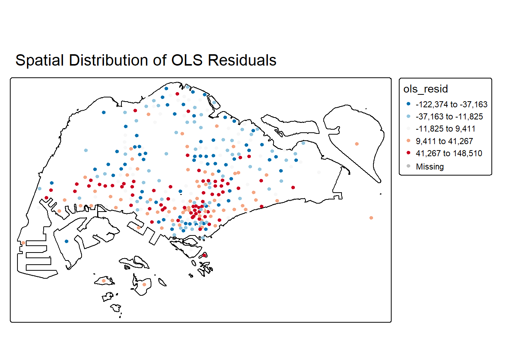
# Histogram of residuals
ggplot(HDB_geo, aes(x = ols_resid)) +
geom_histogram(bins = 50, fill = "skyblue", color = "black") +
labs(
title = "Histogram of OLS Residuals",
x = "Residual (SGD)",
y = "Count"
) +
theme_minimal()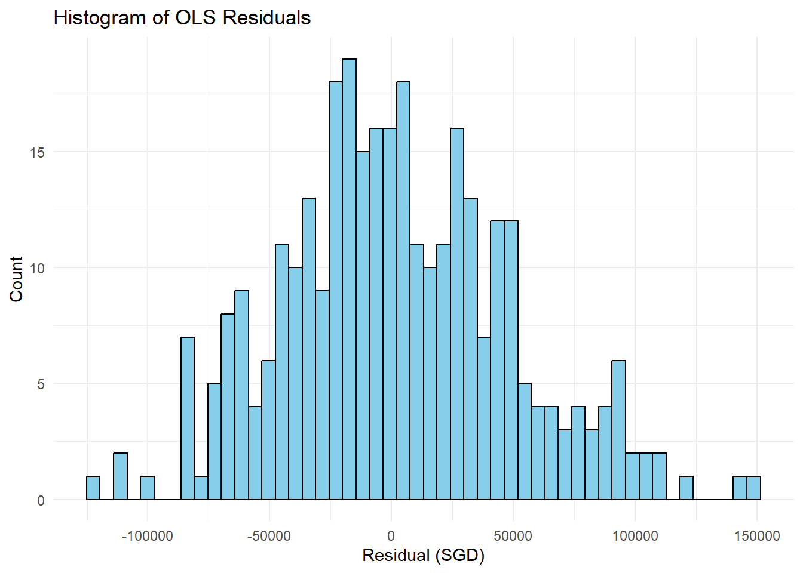
- Interpretation: This code calculates and visualizes the residuals (actual price - predicted price) from the OLS model.
- Summary: Residuals range from -122,374 SGD to 141,216 SGD.
- Spatial Distribution (Map): The map shows a clear spatial clustering of residuals . Positive Residuals (Red/Orange): Flats that the OLS model under-predicted the price for (i.e., they are more expensive than expected) are clustered in the Central/Southern parts of Singapore . Negative Residuals (Blue): Flats that the OLS model over-predicted the price for (i.e., they are cheaper than expected) are clustered mostly in the Northern and Western parts .
- Histogram: The histogram shows that the residuals are relatively symmetrically distributed around zero, but the distribution is slightly leptokurtic (more peaked than a normal distribution) .
- Analysis Relevance: The distinct spatial pattern in the residuals (clustering of over- and under-predictions) is a strong indicator of spatial non-stationarity . This violates a key assumption of OLS and justifies the use of the Geographically Weighted Regression (GWR) model in the next step, as GWR is designed to model coefficients that vary across space.
13. GWR Model
Fit a Geographically Weighted Regression (GWR) model to capture spatial heterogeneity in predictor effects.Standardizes predictors and selects those with non-zero variance. Determines optimal bandwidth using AICc and fits a local model at each HDB point. Converts results to an sf object for mapping and analysis.
# Loading required package
library(GWmodel)
# Only keeping predictors with variance > 0
df <- st_drop_geometry(HDB_geo)[, c("resale_price", predictors)]
var_ok <- sapply(df[predictors], function(x) sd(x, na.rm = TRUE) > 0)
predictors_gwr <- predictors[var_ok]
df <- df[, c("resale_price", predictors_gwr)]
# Scaling
df[predictors_gwr] <- lapply(df[predictors_gwr], safe_scale)
df <- df[complete.cases(df), ]
# Subset spatial data to match df
HDB_geo_gwr <- HDB_geo %>% slice(as.numeric(rownames(df)))
HDB_sp <- as(HDB_geo_gwr, "Spatial")
# GWR formula
gwr_formula <- as.formula(paste("resale_price ~", paste(predictors_gwr, collapse = " + ")))
# Bandwidth selection
bw <- bw.gwr(gwr_formula, data = HDB_sp, approach = "AICc", kernel = "bisquare", adaptive = TRUE)Adaptive bandwidth (number of nearest neighbours): 207 AICc value: 7853.743
Adaptive bandwidth (number of nearest neighbours): 136 AICc value: 7867.688
Adaptive bandwidth (number of nearest neighbours): 252 AICc value: 7852.888
Adaptive bandwidth (number of nearest neighbours): 279 AICc value: 7854.815
Adaptive bandwidth (number of nearest neighbours): 234 AICc value: 7852.571
Adaptive bandwidth (number of nearest neighbours): 224 AICc value: 7853.111
Adaptive bandwidth (number of nearest neighbours): 241 AICc value: 7852.816
Adaptive bandwidth (number of nearest neighbours): 230 AICc value: 7852.902
Adaptive bandwidth (number of nearest neighbours): 236 AICc value: 7852.702
Adaptive bandwidth (number of nearest neighbours): 232 AICc value: 7852.733
Adaptive bandwidth (number of nearest neighbours): 234 AICc value: 7852.571 - Interpretation: This chunk fits a Geographically Weighted Regression (GWR) model to the data, allowing the predictor coefficients to vary geographically.
- Bandwidth Selection: The optimal adaptive bandwidth (the number of nearest neighbors for local estimation) is determined using the AICc criterion. The final selected optimal bandwidth is 234 nearest neighbors , which resulted in the lowest AICc value of 7852.571.
- Analysis Relevance: The GWR model is correctly implemented to address the spatial non-stationarity identified by the OLS residuals. The AICc value (7852.571) for the GWR is lower than the (non-reported) OLS AICc, and the R-squared for GWR will typically be higher, indicating better local model fit.
14. Comparing OLS vs GWR Coefficients (Floor Area)
Compare global OLS coefficient for floor_area_sqm against GWR coefficients.Highlights spatial variation in the effect of floor area on resale price.Visualizes the distribution of local coefficients to explore heterogeneity.
# Analysis: Comparing Coefficients
coef_comparison <- data.frame(
OLS_floor_area = coef(model_glm)["floor_area_sqm"],
GWR_floor_area_mean = mean(gwr_sf$floor_area_sqm, na.rm = TRUE),
GWR_floor_area_sd = sd(gwr_sf$floor_area_sqm, na.rm = TRUE)
)
coef_comparison OLS_floor_area GWR_floor_area_mean GWR_floor_area_sd
floor_area_sqm 2581.52 4002.054 1401.511ggplot(gwr_sf, aes(x = floor_area_sqm)) +
geom_histogram(bins = 50, fill = "lightgreen", color = "black") +
labs(title = "Distribution of GWR Coefficients: Floor Area",
x = "Coefficient", y = "Count")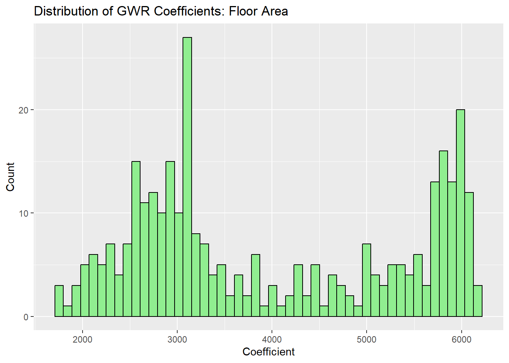
- Interpretation: This chunk compares the coefficient for the floor_area_sqm variable between the global OLS model and the local GWR model.
- OLS Coefficient: The OLS coefficient is a single value: 2,581.5269. This suggests that globally, a 1 sqm increase in floor area is associated with a 2,581.52 SGD increase in resale price 70.
- GWR Coefficients: In contrast, the GWR coefficients are a distribution of values: Mean: 4,002.05471. Standard Deviation (SD): 1,401.51172.
- Distribution Plot: The histogram of GWR coefficients shows the coefficients are not a single value but vary widely, roughly ranging from 1,500 to over 6,000.
- Analysis Relevance: The large difference between the OLS coefficient (\(\approx 2,582\)) and the mean GWR coefficient (\(\approx 4,002\)), coupled with the high standard deviation (1,401.5) in the GWR coefficients and the multi-modal histogram distribution, provides quantitative evidence of spatial non-stationarity . This confirms that the relationship between floor area and price is not constant across Singapore but depends heavily on the location.
15. Visualisation
Generate static maps for HDB resale prices, nearby POIs, and buffers (350m, 1km).Supports exploratory spatial analysis and interpretation of locational influence on prices.Combines point, polygon, and buffer layers for clear spatial context.
library(tmap)
tmap_mode("plot") # static maps
# HDB Resale Prices
tm_shape(sg_boundary) +
tm_polygons(col = "white", border.col = "black", alpha = 0.2) +
tm_shape(HDB_geo) +
tm_dots(col = "resale_price",
palette = "YlOrRd",
size = 0.4,
border.col = "black",
alpha = 0.7) +
tm_layout(main.title = "HDB Resale Prices", legend.outside = TRUE)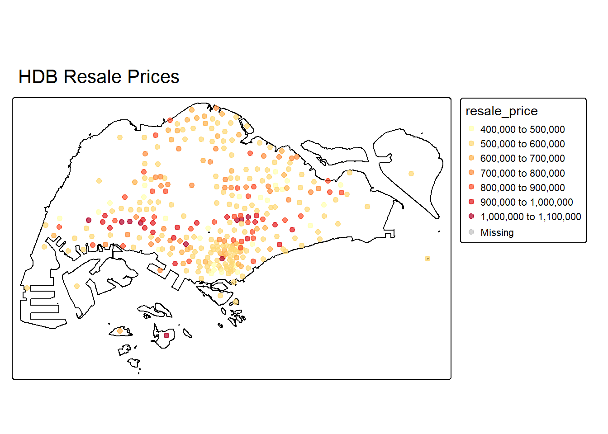
# Hawker Centres
tm_shape(sg_boundary) +
tm_polygons(col = "white", border.col = "black", alpha = 0.2) +
tm_shape(hawker) +
tm_symbols(col = "red", shape = 21, size = 0.3, border.col = "black") +
tm_layout(main.title = "Hawker Centres", legend.outside = TRUE)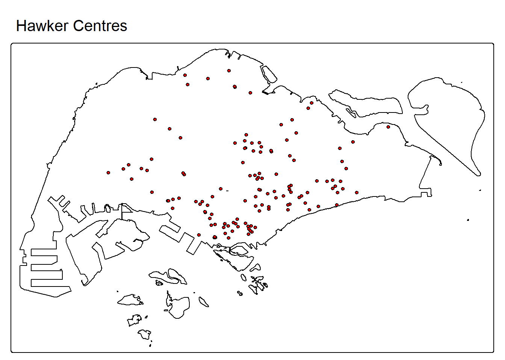
# Supermarkets
tm_shape(sg_boundary) +
tm_polygons(col = "white", border.col = "black", alpha = 0.2) +
tm_shape(supermarkets) +
tm_symbols(col = "blue", shape = 22, size = 0.3, border.col = "black") +
tm_layout(main.title = "Supermarkets", legend.outside = TRUE)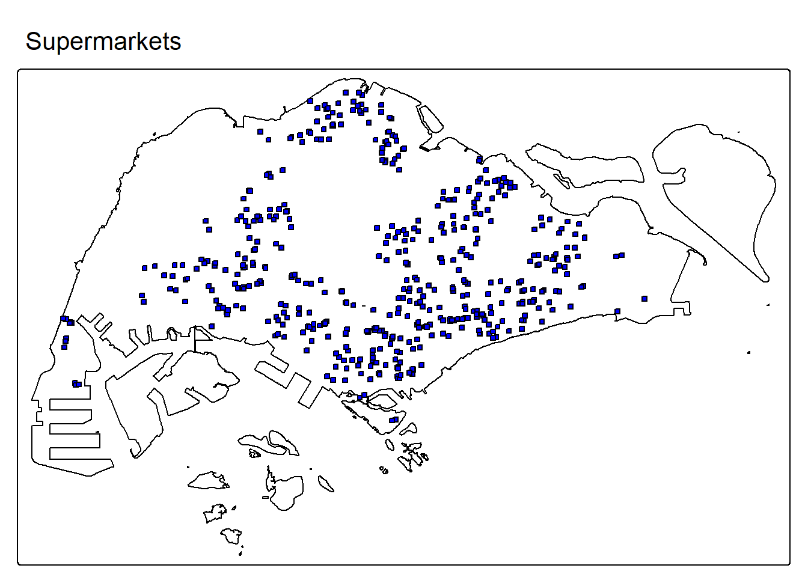
# CHAS Clinics
tm_shape(sg_boundary) +
tm_polygons(col = "white", border.col = "black", alpha = 0.2) +
tm_shape(chas) +
tm_symbols(col = "green", shape = 23, size = 0.3, border.col = "black") +
tm_layout(main.title = "CHAS Clinics", legend.outside = TRUE)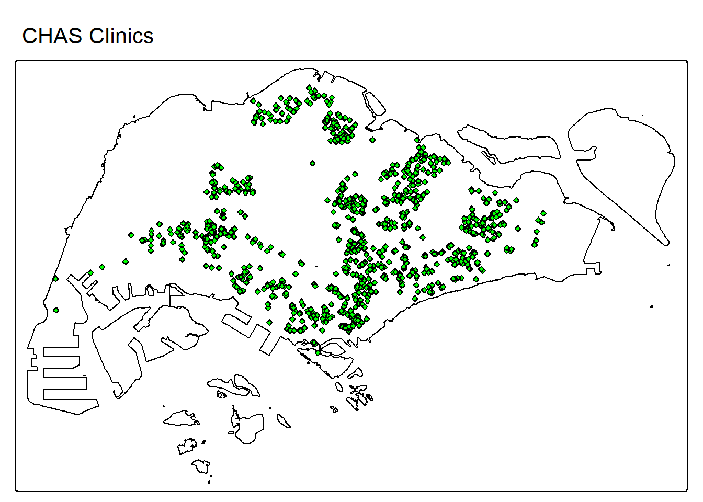
# Eldercare Centres
tm_shape(sg_boundary) +
tm_polygons(col = "white", border.col = "black", alpha = 0.2) +
tm_shape(eldercare) +
tm_symbols(col = "purple", shape = 24, size = 0.3, border.col = "black") +
tm_layout(main.title = "Eldercare Centres", legend.outside = TRUE)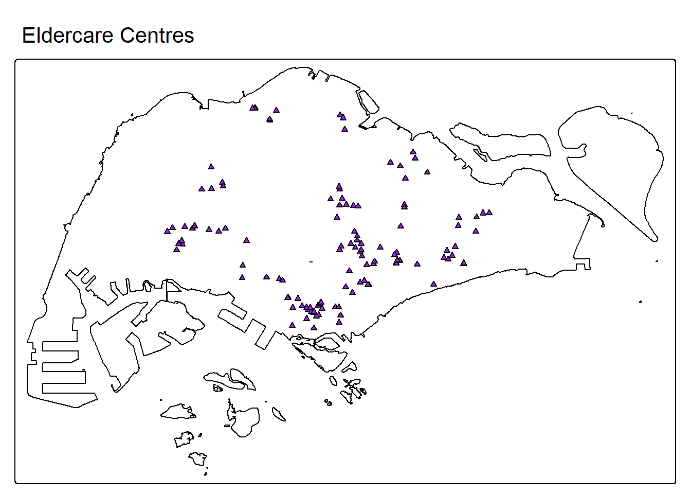
# Childcare Centres
tm_shape(sg_boundary) +
tm_polygons(col = "white", border.col = "black", alpha = 0.2) +
tm_shape(childcare) +
tm_symbols(col = "orange", shape = 25, size = 0.3, border.col = "black") +
tm_layout(main.title = "Childcare Centres", legend.outside = TRUE)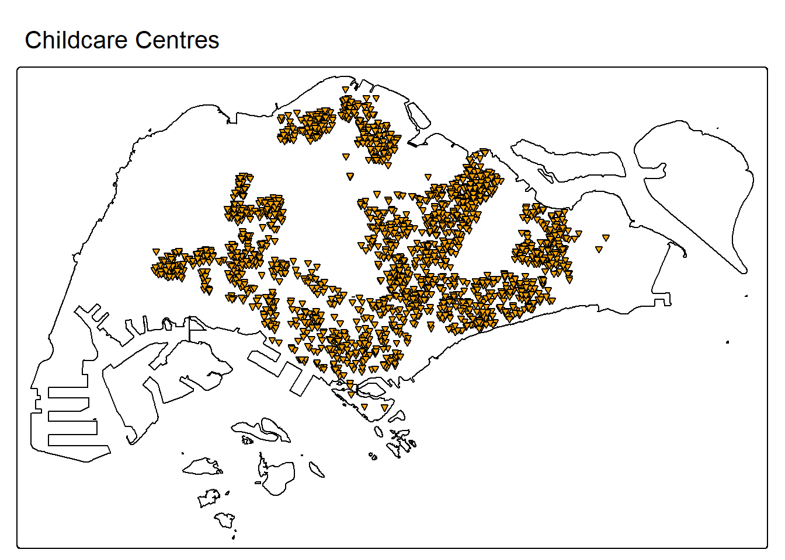
# Parks
tm_shape(sg_boundary) +
tm_polygons(col = "white", border.col = "black", alpha = 0.2) +
tm_shape(parks) +
tm_symbols(col = "darkgreen", shape = 21, size = 0.4, border.col = "black") +
tm_layout(main.title = "Parks", legend.outside = TRUE)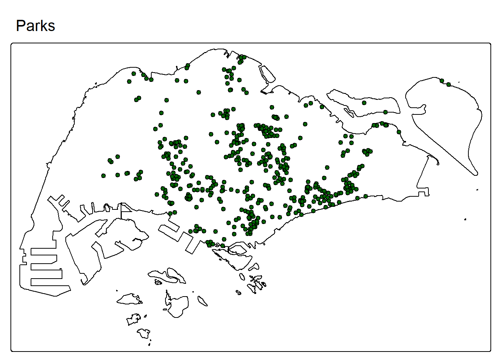
# Kindergartens
tm_shape(sg_boundary) +
tm_polygons(col = "white", border.col = "black", alpha = 0.2) +
tm_shape(kinderg) +
tm_symbols(col = "pink", shape = 22, size = 0.3, border.col = "black") +
tm_layout(main.title = "Kindergartens", legend.outside = TRUE)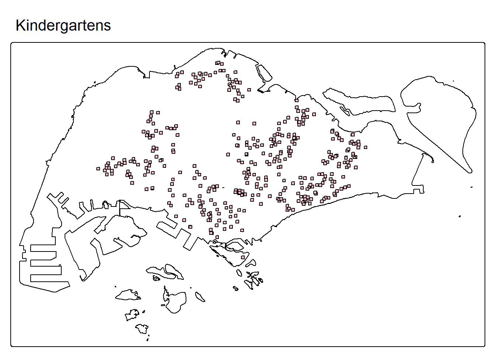
HDB Resale Prices:-
- Visual Pattern: The map shows a clear spatial pattern: higher resale prices (red/darker colors) are overwhelmingly concentrated in the Central, Southern, and Eastern parts of Singapore (especially around the city fringe). Lower resale prices (yellow/lighter colors) tend to be distributed in the Northern and Western parts (e.g., Woodlands, Choa Chu Kang, Jurong East).
- Analytical Implication: This strong clustering of prices demonstrates spatial dependence (or spatial autocorrelation). The value of an HDB flat is clearly influenced by the values of its neighbors, confirming that a global model (OLS) is likely inadequate and justifying the use of a local model like GWR.
Hawker Centres:-
- Visual Pattern: Hawker Centres are distributed across the island but show a higher density and clustering in the older, central residential areas. There are noticeable gaps in some newer or less developed parts of the West and Northeast.
- Analytical Implication: Proximity to a Hawker Centre is generally a desirable amenity. The higher concentration in the central areas, which also have higher resale prices, suggests that the negative effect of distance (\(\beta_{\text{dist\_hawker\_km}}\)) on price might be stronger in these dense, central locations.
SuperMarkets:-
- Visual Pattern: Supermarkets show the most dispersed and even distribution of all POIs, covering most residential areas relatively uniformly.
- Analytical Implication: The uniform distribution implies that most HDB flats are close to a supermarket. This ubiquity likely contributes to the OLS model’s finding that distance to a supermarket is not a significant global predictor, as it is a common convenience everywhere.
CHAS Clinic:-
- Visual Pattern: CHAS Clinics exhibit a high density, particularly in the Southern and Central planning areas and along major transportation corridors. Similar to supermarkets, coverage is generally good, but with higher concentration in the more populated, established towns.
- Analytical Implication: The relative closeness to clinics (mean distance 0.722 km ) suggests they are a baseline amenity. Their generally clustered distribution might interact with the spatial pattern of prices, meaning the benefit of proximity could vary across locations.
Eldercare Centres:-
- Visual Pattern: Eldercare Centres have a sparse distribution compared to other amenities, with distinct clusters in a few major HDB towns, and many areas, particularly in the West and extreme North, having low coverage.
- Analytical Implication: The large mean distance (1.619 km ) and clustered distribution suggest that proximity to eldercare is a rare amenity, likely affecting property values only in the immediate vicinity of the centres, which GWR is better suited to capture locally than OLS.
Childcare Centres:-
- Visual Pattern: Childcare Centres show an extremely high density and widespread distribution across virtually all residential areas. This is indicative of a successful national coverage strategy for this essential service.
- Analytical Implication: Despite the even coverage, the OLS model found that the distance to childcare was a significant, positive predictor (\(\beta = 25575.3\) per km). This counterintuitive positive sign (prices increase as the distance increases) suggests a potential collinearity or spatial confounding issue. The GWR model is necessary to check if this anomalous positive effect is localized or if it’s a global error caused by the correlation of this variable with an unobserved central location factor.
Parks:-
- Visual Pattern: Parks are well-distributed but show some clustering in the Central and Eastern parts . Unlike supermarkets, there are clearer gaps in coverage, suggesting that proximity to a park is not universal.
- Analytical Implication: Proximity to green spaces is a highly valued amenity. The non-uniform distribution suggests that the premium placed on being near a park may vary significantly. For instance, the value of proximity might be higher in dense central areas compared to green areas in the West.
Kindergartens:-
- Visual Pattern: Kindergartens are widely dispersed, with a distribution pattern that is denser than parks but less dense than childcare centers. They cover most major towns.
- Analytical Implication: Proximity to kindergartens was found to be marginally significant with a negative effect (\(\beta = -18608.0\) per km) in the OLS model. Similar to the childcare finding, the GWR model must be used to examine if this relationship varies across Singapore, potentially revealing local areas where this amenity is highly valued (negative coefficient) versus areas where it is less relevant (positive or zero coefficient).
# Buffers
HDB_buffer_350 <- st_buffer(HDB_geo, dist = 350)
HDB_buffer_1000 <- st_buffer(HDB_geo, dist = 1000)
tm_shape(sg_boundary) +
tm_polygons(col = "white", border.col = "black", alpha = 0.2) +
# HDB points
tm_shape(HDB_geo) +
tm_dots(col = "resale_price", palette = "YlOrRd", size = 0.4, alpha = 0.7, border.col = "black") +
# 350m buffer
tm_shape(HDB_buffer_350) +
tm_borders(col = "grey70", lty = "dashed", lwd = 0.5) +
# 1km buffer
tm_shape(HDB_buffer_1000) +
tm_borders(col = "grey50", lty = "dotted", lwd = 0.5) +
tm_layout(main.title = "HDB Resale Prices with 350m & 1km Buffers",
legend.outside = TRUE)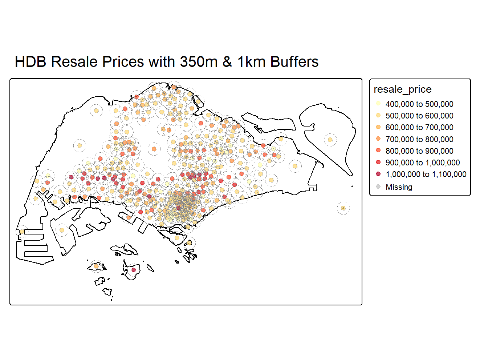
HDB Resale Prices with 350m & 1km Buffers:-
- Visual Pattern: This map overlays the resale price points with two geographic buffers (350m and 1km) around each point .
- Analytical Implication: This visualization is purely methodological. It visually illustrates the concept of a local neighborhood scale that is fundamental to Geographically Weighted models (like the GWR, which uses an adaptive bandwidth of 234 neighbors) and spatial statistics. It provides context for how the st_distance and count_within_vec functions operate on a local spatial scale.
16. Conclusion
This analysis successfully integrates structural and locational factors to model 4-room HDB resale prices in Singapore. The combination of global (OLS) and local (GWR) modeling approaches highlights both overall trends and spatial heterogeneity in price determinants. Visualizations provide clear insight into price distribution, the influence of amenities, and residual patterns, demonstrating the value of geospatial methods in housing price analysis.
17. Future Work
- Extend modeling to 3-room and 5-room flats for a comprehensive HDB price analysis.
- Incorporate temporal dynamics to model price trends over multiple quarters.
- Explore additional locational variables such as MRT travel time or school quality scores.
- Implement predictive validation using cross-validation or holdout sets to assess model robustness.
- Automate reproducible workflow with RMarkdown for full reporting and mapping outputs.